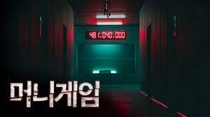
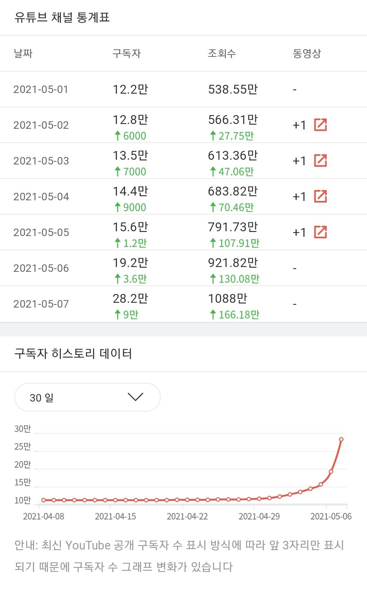

논리왕 전기는 머니게임 출연 전에는 거의 토크온에서만 이름을 알렸고 반지하 생활을 하는 하꼬 시절도 있었다. 하지만 이번에 (진용진의 머니게임)
을 진행하면서 가장 떡상한 인물로 논리왕 전기 유튜브는 머니게임 출연 전 (2021.05.02) 12.8만 구독자를 보유했지만 머니게임 출연 후 (2021.05.27)일 100만 유튜버가 되게된다
그는 머니게임을 진행하기 전 원래부터 말빨로 인기가 많았던 토크온에서도 말을 잘하기로 유명했으며 토크온에서 갈고 닦은 능력덕분인지 머니게임에서 언쟁할 때 빛을 발휘하게되었다
이를 본 시청자들은 대체적으로 "사이다다 웃기다"는 긍정적인 반응을 보였고 이는 유튜브 구독자 수에 큰 영향을 미치게되었다